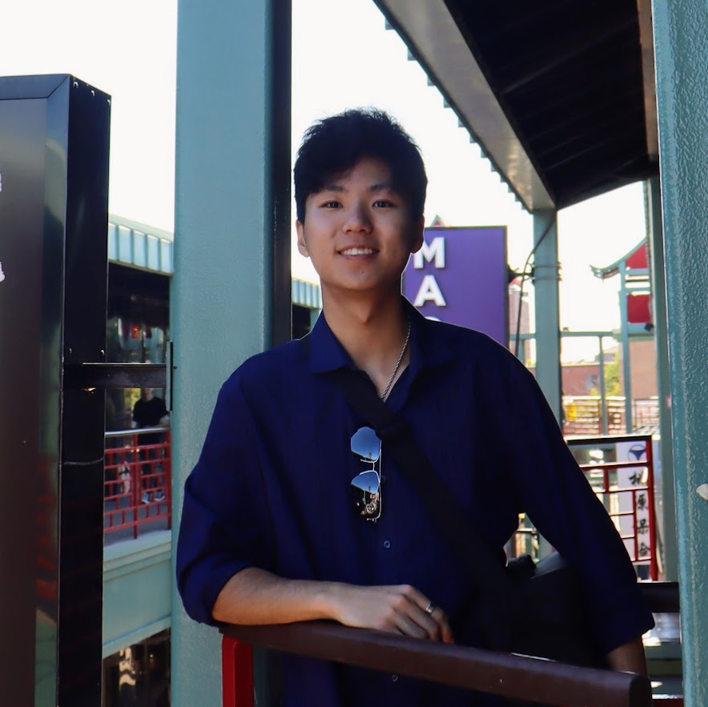

Shawn Gao
Texas A&M University
shawng3884@gmail.com


The "Big Event" is a one day event held annually to show appreciation to the local community surrounding Texas A&M, completing various service projects for residents of the community. In 2023, I was part of a group that helped a local flatten her elevated front yard by shoveling around 10 tons of dirt. In 2024, I was part of a group that mowed, weeded, and cleaned up a property. The Big Event is always very personally rewarding and I'm happy to have an accessible way to give back to my community.
BUILD designs, constructs, and deploys Texas Aggie Medical Clinics worldwide. It is the largest student service organization on campus, with more than 15,000 students participating in the construction cycle throughout the years. Typically, empty shipping containers are transformed into medical clinics as part of a year-long project. I have participated in BUILD as a Command Team member since Spring 2023. During my first year, I was a part of the Operations team, who oversees the day-to-day planning of the project in addition to helping with any logistics that need to be taken care of prior to and during the project, such as insurance, mobilization, coordinating with Student Activities, and securing facilities. In my second year, I am a part of the Marketing team, who contants news outlets and manages BUILD's social media. I also helped refine and redesign the BUILD website, hosted on Wix. Every semester, I spend around 40 hours on site to help ensure construction safety and efficiency for student volunteers.

Texas A&M University
shawng3884@gmail.com